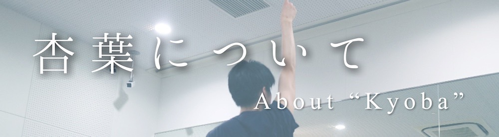

チーム発足にあたって
大分からどまつり出場を目指すチームとして、2020年に発足しました。
主な活動の目的と致しましては、全国各地のお祭りやイベントへの参加を通じて、参加者の皆さんと交流を深めること。
また、活動の中で全国各地へ赴く事により、各地域の方々との『出会い・交流・風土』をよさこい祭りを通じて、
楽しみながら学んで頂くことを目的としています。
代表挨拶
「大分からどまつりへ」を目標に妥協せず常に魅せる作品を作っていきます。
コロナでお祭りが次々と中止になり、大変厳しい状況ではありますが、
今後のよさこいの発展に尽力出来るよう準備を進めて参ります。
代表 一尾佳史（ヨッシー）